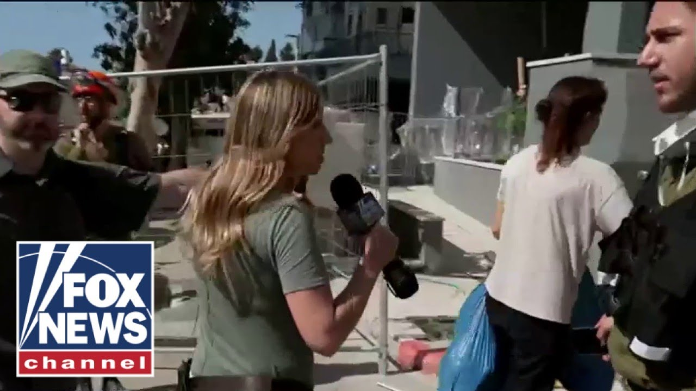

【突发：伊朗导弹袭击下，以色列人拉响警报紧急避难】
Summary: The IDF confirms strikes in Tehran as Israeli crews search for survivors after Iranian missiles killed 10 and injured hundreds. Alex Hogan reports live from Tel Aviv amid alerts of incoming attacks, showing devastation in Batyam where a residential building was directly hit, killing 11 overnight. Rescue teams comb rubble as police deploy drones and canines. Israel remains on high alert with reinforced border units, while international efforts, including US and Jordanian interceptions, attempt to counter further strikes.
摘要： 以色列国防军证实对德黑兰发动袭击，救援人员在伊朗导弹造成10人死亡、数百人受伤后搜寻幸存者。亚历克斯·霍根在特拉维夫现场报道，警报显示新一轮袭击将至，巴特亚姆一居民楼遭直接击中，连夜造成11人死亡。搜救队排查废墟，警方动用无人机和搜救犬。以色列保持高度警戒，增派边境部队，美国及约旦等国际力量协助拦截导弹。

⏱️ Estimated Reading Time: 10 min
📚 六级生词 📚 雅思生词 📚 托福生词 📚 专八生词 📚 SAT生词 📚 考研生词 📚 GRE生词 📚 高考生词
Let's get to your our top story.
现在为您带来头条新闻。
The IDF confirms new strikes in Thran this morning as Israeli crews are searching for survivors in the rubble after deadly Iranian missiles kill 10 people and injure hundreds others.
以色列国防军证实今晨对德黑兰发动新袭击，此前伊朗导弹造成10人死亡、数百人受伤，以方救援人员正搜寻废墟中的幸存者。
Alex Hogan is live on the ground near Tel Aviv with the very latest.
亚历克斯·霍根在特拉维夫附近现场带来最新消息。
Alex, good morning.
亚历克斯，早上好。
Good morning.
早上好。
We're getting some breaking news right now.
我们刚收到突发新闻。
An alert has gone out to the entire country here in Israel telling people they need to get close to a shelter.
以色列全国发布警报，要求民众就近躲避。
If sirens do go off, we're going to move into one of these buildings and take shelter as there is the belief that there is likely an incoming attack.
若警报响起，我们将进入建筑避难，因预计袭击将至。
This is after we have seen widespread devastation in this neighborhood.
此前该社区已遭大面积破坏。
This is Batyam in the outskirts of Tel Aviv where one building behind me, a residential building, a large apartment building was the scene of a direct hit.
这里是特拉维夫郊外的巴特亚姆，我身后一栋居民楼遭直接击中。
But as a result, all of the surrounding homes, all of the surrounding residential and apartment buildings have been completely destroyed with the windows broken, the doors mangled, the roofs either partially or fully blown off as a result of this direct hit.
周边住宅门窗碎裂、屋顶掀翻，全因这次直接打击。
This was the scene overnight of some of these impacts that we saw of Iranian missiles, some of which were able to breach Israel's air defense systems and create direct hits like this.
这是昨夜伊朗导弹突破以方防空系统后造成的直接打击现场。
We are now also learning of the increased number of dead.
死亡人数持续上升。
As many as 11 people have died in overnight strikes.
连夜空袭已致11人死亡。
That's because of I'll show you this footage here, some of the drone footage of the area of where I'm standing.
通过无人机画面可见我所在区域的惨状。
Search and rescue teams have been going through the area, combing through the rubble and have just uncovered another body, another grim part of the news of the dead that we've learned of in recent days.
搜救队发现又一具遗体，近日死亡统计再添残酷数字。
Children are among the dead here in Israel.
遇难者包括儿童。
And we talked with the international spokesperson of the police who says they had to use drones, canines to comb through this area and search for survivors.
警方国际发言人表示已动用无人机和搜救犬寻找幸存者。
Take a listen.
请听报道。
What happens next?
接下来会怎样？
What happens tonight?
今夜局势如何？
Are you preparing to see unfortunately attacks and scenes just like this tomorrow morning again?
是否预计明早会再现类似袭击？
Well, I can't see the future, but I can tell you that the Israel police is prepared in the event that another barrage of rockets targets our civilian communities.
以色列警方已做好准备应对可能的新一轮火箭弹袭击。
Like I told you, we're on high alert, but we've also recruited seven battalions, reserve battalions of our border police to help reinforce our units that are on the ground so that we can be in all areas of Israel.
边境警察七个预备役营已增援各地。
And if there's a rocket strike, missile strike to a certain residential community, we can get there as fast as possible.
若居民区遭袭，我们将最快抵达。
Time is of the essence when it comes to these things.
分秒必争。
We want to get people medically evacuated as fast as possible, provide service to anybody that may be trapped, and uh that's what we're going to continue doing.
全力救治伤员、营救受困者。
So, we've seen a massive police presence here throughout the morning.
今晨警方大规模部署。
Medics again going through this area doortodoor.
医护人员逐户排查。
We are seeing all of them right now evacuating this area, getting themselves to shelter.
民众正紧急疏散避难。
Something we are going to do as well if those sirens do sound off here in Tel Aviv, meaning that the city would once again be under attack.
若警报再响，特拉维夫将再遭袭击。
And it would be something that we have not seen in recent days.
这与近日夜间袭击模式不同。
Typically, these Iranian missile and drone strikes have been happening at night, but for those sirens to take place during the day, it shows just once again the changing experience that Israelis are living through amid this escalation here in the Middle East.
白昼警报凸显中东局势升级下以色列人的新常态。
Back to you.
交还给您。
Thank you, Alex.
谢谢亚历克斯。
So, um, obviously, you know, what we're looking at behind you is evidence that the Iron Dome did not get all the missiles that were uh that that were incoming for Israel.
"铁穹"系统未能拦截所有来袭导弹。
And uh it's not the only those are not the only that's not the only missile that sort of got past the Iron Dome.
并非唯一漏网导弹。
Um what is the you know and obviously is you have Israel, you have the United States, but there are also other countries that are trying to intercept these missiles there.
美以等国正联合拦截。
They have a long way to go from Iran.
导弹自伊朗千里来袭。
It's it's about a thousand miles.
航程约千英里。
They're going over Jordan.
穿越约旦。
They're going over Saudi Arabia.
飞越沙特。
And we know that those two countries are trying to help shoot down some of these missiles.
两国协助拦截。
What other efforts are there?
还有哪些应对措施？
What other countries in the region are working to help shoot down some of these missiles that are incoming to Israel?
地区其他国家如何协助？
Oh, we're getting we're getting some sirens right now.
警报再次响起。
We're going to move oursel to shelter.
我们将立即避难。
We're going to follow you, but you can stay with us as we continue to move.
请观众继续关注。
So, to answer your question, the air defense systems here in Israel, it's not made up just of the Iron Dome.
以方防空不只有"铁穹"。
We also have a David Sling as well as the Arrow, all of which have different capabilities.
还有"大卫投石索"和"箭"式系统。
Careful here as we move down on these stairs.
下楼梯当心。
So, we're going to move with everyone into the shelter, uh, into the closest shelter that we can find.
正随民众进入最近避难所。
As a result, these sirens mean that Tel Aviv is one of the cities that the IDF believes could be the center of this next incoming attack.
警报显示特拉维夫或是下个目标。
So, we have seen a US presence continue to defend Israel as well.
美军持续协防。
We know that the army and the navy, they have been using their resources to strike down some of these missiles and these drones that we've seen in recent days.
陆海军近日拦截多架无人机导弹。
As you mentioned Jordan the other day, Jordan was able to intercept some of the drones that breached its airspace, but so far in terms of the international response, really we're seeing Israel defend its skies as well as the US trying to step in.
约旦拦截越境无人机，国际响应以美为主。
So right now we're walking into this underground bunker.
正进入地下掩体。
This appears to be a parking garage.
似是停车场。
One of the types of areas that would work well because it's insulated with concrete.
混凝土结构适合避难。
This is the kind of area again similar to a stairwell or a bomb shelter is the kind of place that people will need to stay until we get the all clear.
需在此等待警报解除。
Alex, I'm not sure if you can still hear us very well, but just just so we understand that siren going off.
亚历克斯能否听清？
Does that mean something is imminent?
是否意味袭击将至？
That that something has been spotted in the air.
空中发现目标？
I lost you there for a second.
信号中断。
I think I have you back.
恢复连接。
If you could just repeat that question for me.
请重复问题。
That alarm going off, does that mean that something is imminently incoming that you that there's an active attack?
警报是否预示袭击在即？
Yes.
是的。
The initial warning that we got indicated, it went off to the entire country.
全国警报已启动。
It indicated that there could be an incoming attack that could interfere with the Israeli air defenses.
预示可能突破防空网的袭击。
Sorry, I'm getting some interference in my ear.
耳机有杂音。
The first alert that we got notified everyone across the country to get close to a shelter and if the sirens did go off in their city, that would mean that their city potentially could be under attack.
首轮警报要求全民就近躲避，城市警报意味可能遭袭。
So, the fact that we just heard those sirens and the fact that we're seeing even soldiers come here to take shelter means that all of Israelis, all of the foreigners, all of the tourists that are in Tel Aviv right now need to be taking shelter.
军民及游客均需立即避难。
We're also getting a new alert uh on our phones.
手机收到新警报。
All of the cell phones that people might have have been going off.
所有手机警报齐鸣。
So, you can take a look at that.
请看画面。
Just alerting people, take a shelter.
提示民众避难。
Obviously, this is in Hebrew, but alerting people to get to shelter as quickly as possible.
希伯来文显示"速避难"。
And what we've seen in the past when we've been in this type of situation will wait about 30 minutes to an hour before you get the all clear.
通常需等待30-60分钟解除警报。
So, it can take a long time.
可能耗时较长。
But in my experience, when we've been here in bunkers like this, the explosions are so loud, it'll shake the walls.
爆炸曾震撼掩体墙壁。
That's what we experienced overnight.
昨夜亲历如此。
So, we're getting moved a little deeper into this bomb shelter.
正往掩体深处移动。
I might lose you.
可能失联。
I'm not sure.
不确定。
Yeah, I think I think we lost incredible footage right there.
精彩画面中断。
Hi everyone, I'm Brian Kilme.
我是布莱恩·基尔梅。
I want you to do me a favor.
请帮忙。
I want you to click to subscribe to the Fox News YouTube page.
订阅福克斯新闻YouTube频道。
This is the only way that I know for sure that you're not going to miss any great commentary, any great news bites, any great interviews coming your way on Fox.
确保不错过精彩内容。
You can get it all here on YouTube.
YouTube一站式获取。
So, subscribe right now.
立即订阅。